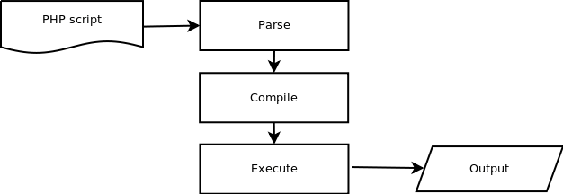
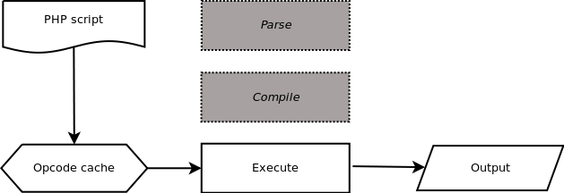

PHP 语言本身和环境层面
解释性语言在每一次运行都面对原始脚本的输入、解析、编译，然后执行

OpCode 缓存
代码文件确定时，解析到编译这一步都是确定的。 因为文件已不再变化，仅随输入参数的不同而有不同的执行。

OpCode缓存扩展: APC、Zend OPCache、eAccelerator
动态类型的语言:涉及到在内存中的类型推断,如字符串加操作得到整数，整数字符串连接操作得到字符串
解决：将PHP转为静态类型的表示(Yaf)
PHP 各个版本的改进
语法和使用规则的层面